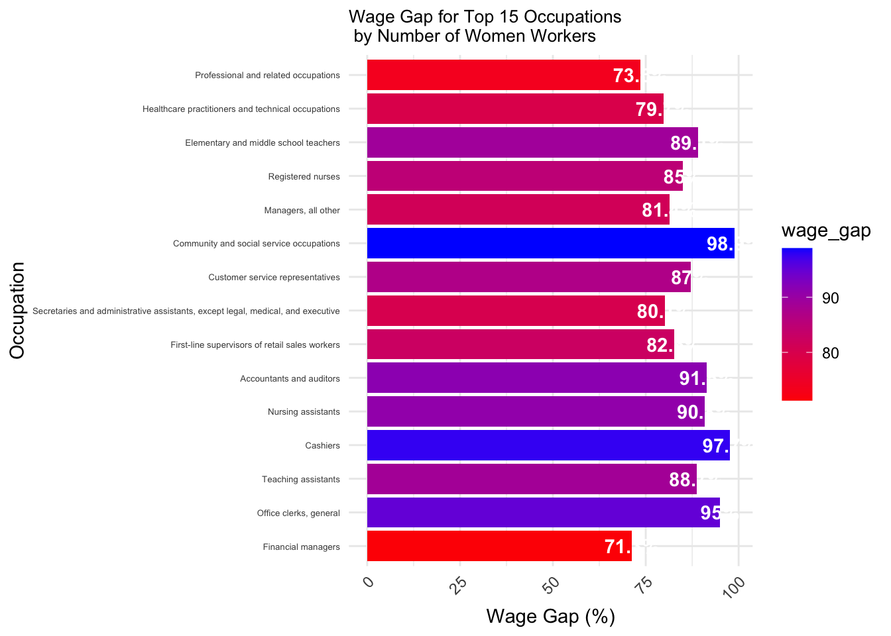
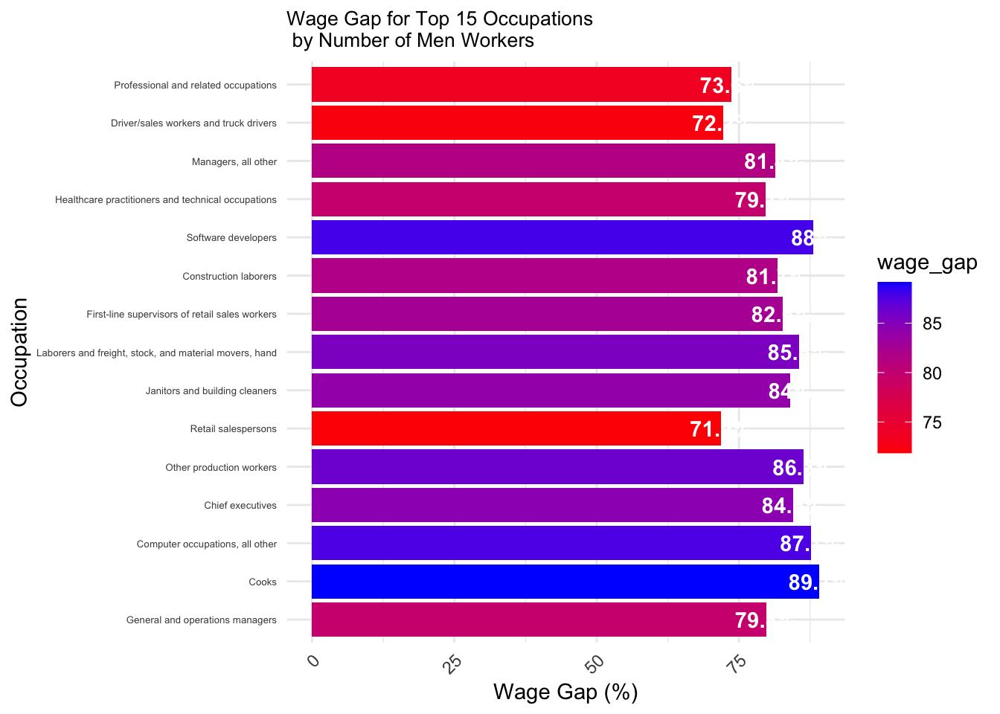
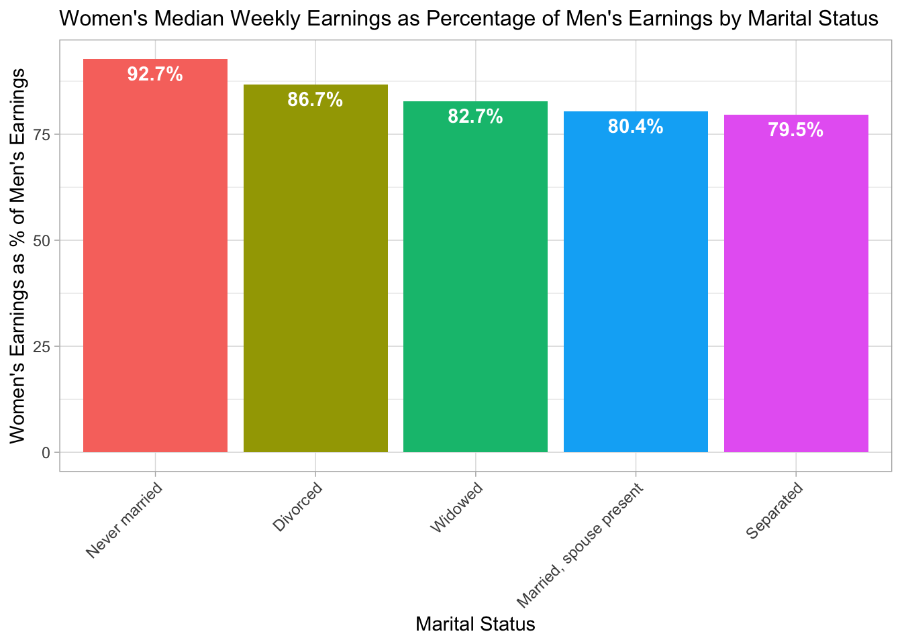
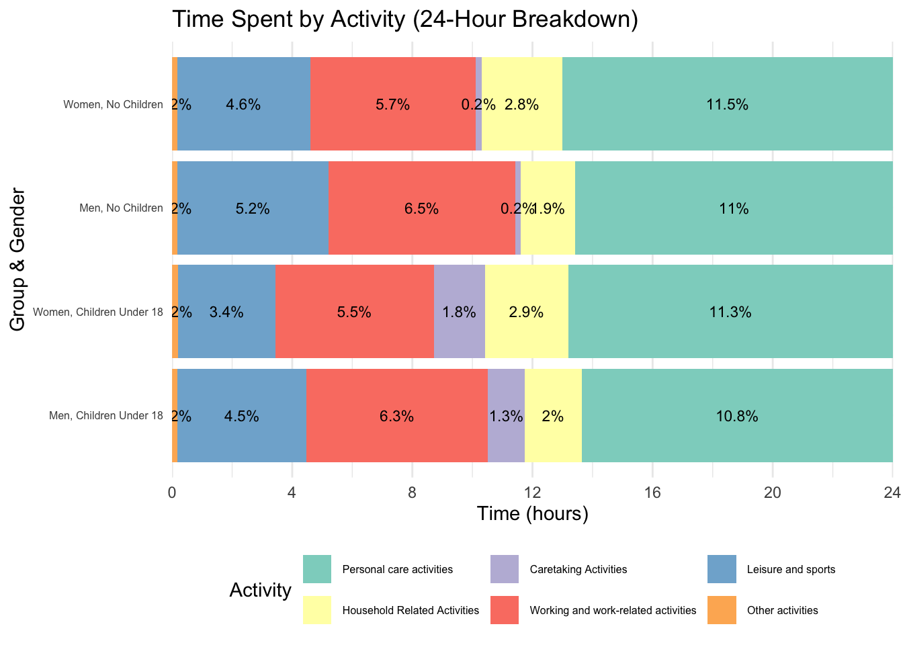

3.1 Occupation: The Primary Driver of the Gender Wage Gap
One of the most significant factors driving the gender wage gap is occupation. Men and women tend to be concentrated in different types of jobs, and these occupations vary greatly in terms of pay. Occupations that are predominantly female, such as nursing, teaching, and caregiving, tend to be devalued and are generally lower-paying compared to male-dominated fields like technology, finance, and management. Then, within an occupation, there may be additional wage gaps between genders. In 2017, the Institute for Women’s Policy Research published a fact sheet on the (Gender Wage Gap by Occupation in 2017), discusses this phenomenon, and does has additional insights on these trends within races.
In this section, we will explore the occupations men and women chose and the earnings imbalance between and within those occupations, using the latest data from the BLS. This will help provide a clear picture of how much the gender wage gap varies depending on the field.
3.1.1 Total Earnings by Gender and Occupation Group
To prepare the data for plotting, we first pick major occupations by filtering on the number of workers. We then estimate the aggregate dollar earnings for each gender and occupation type by multiplying men’s and women’s median earnings by the number of men and women in each occupation. This representation allows us to abstract certain details, and on a high level understand what the total earnings per gender look like.
In the stacked bar chart below, we can see at a glance that on an aggregate level, women’s earnings are lower than men’s. It is also evident that a larger portion of the share of management, business, and financial wages go to men, and a higher share of the education, healthcare, and office occupations go to women.
Code
library(ggplot2)library(dplyr)library(tidyr)library(scales) # For label formatting
Attaching package: 'scales'
The following object is masked from 'package:readr':
col_factor
Code
# Prepare the datadata_clean <- MedianWeeklyEarningsByOccupation |>filter(total_number_of_workers >=15, !is.na(men_median_weekly_earnings) &!is.na(women_median_weekly_earnings))# Calculate total earnings by multiplying median weekly earnings by the number of workersdata_clean <- data_clean |>mutate(men_total_earnings = men_median_weekly_earnings * men_number_of_workers,women_total_earnings = women_median_weekly_earnings * women_number_of_workers)# Reshape the data to long format for stackingdata_long <- data_clean |> dplyr::select(occupation, occupation_group_major, men_total_earnings, women_total_earnings) |>pivot_longer(cols =c(men_total_earnings, women_total_earnings),names_to ="gender",values_to ="total_earnings") |>mutate(gender =recode(gender, "men_total_earnings"="Men", "women_total_earnings"="Women"))# Create stacked bar chart with color by major occupation groupggplot(data_long, aes(x = gender, y = total_earnings, fill = occupation_group_major)) +geom_bar(stat ="identity", position ="stack") +labs(title ="Total Earnings by Gender and Occupation Group",x ="Gender",y ="Total Earnings (Billions)",fill ="Occupation Group") +scale_fill_brewer(palette ="Set3") +# Use a color palette for different occupation groups# use 1e-6 for billions bc no. of workers in thousands alreadyscale_y_continuous(labels =label_number(scale =1e-6, suffix ="B")) +# Format Y-axis in billionstheme_minimal() +theme(legend.position ="right") # Place the legend to the right
3.1.2 Comparing Earnings and Representation: Cleveland Dot Plot
To dig a little deeper, we can also examine the number of workers in each occupation alongside median weekly earnings for men and women. The following Cleveland dot plot helps visualize both the earnings disparity and the gender representation within each occupation. It shows the median earnings for both men and women, and how the size of the workforce differs between genders.
This comparison reveals that many high-paying occupations like “Management”, “Computer and mathematical”, and “Architecture and engineering” have larger numbers of men that women, while women are often clustered in lower-paying, high-population fields, such as “Office and administrative support”, “Healthcare practitioners and technical”, “Education, training, and library”, and “Business and financial operations” occupations. Furthermore, within every single major occupation, men’s median earnings exceed women’s… even occupations dominated by women!
The imbalance in gender representation across occupations, combined with the pay differences within occupations, exacerbates the overall wage gap.
Code
# Reshape the data to long formatdata_long <- MedianWeeklyEarningsByOccupationAggregate |> dplyr::select(occupation, men_number_of_workers, women_number_of_workers, men_median_weekly_earnings, women_median_weekly_earnings) |>pivot_longer(cols =c(men_number_of_workers, women_number_of_workers, men_median_weekly_earnings, women_median_weekly_earnings), names_to ="variable", values_to ="value") |>mutate(gender =case_when(str_detect(variable, "women") ~"Women",str_detect(variable, "men") ~"Men" ),variable =case_when(str_detect(variable, "number_of_workers") ~"Number of Workers",str_detect(variable, "median_weekly_earnings") ~"Median Weekly Earnings" ))# Plot with both number of workers and median weekly earningsggplot(data_long, aes(x = value, y = occupation, color = gender)) +geom_point(size =4) +facet_wrap(~ variable, scales ="free_x") +# Separate by the variable (Workers vs Earnings)scale_color_manual(values =c("blue", "pink")) +labs(title ="Number of Workers and Median Weekly Earnings \nby Occupation (Men vs Women)",x ="Value", y ="Occupation",color ="Gender") +theme_minimal() +theme(axis.text.y =element_text(size =8), plot.title =element_text(size =10)) # Adjust y-axis labels for readability
Further, let’s look at the top occupations for men and women, and what the gender imbalance looks like in each. We first order the occupations by number of workers, and take a closer look at the top 15.
Some interesting trends arise: for top women’s occupations, we see that the generally higher paying roles like “Financial managers” and “Professional and related” occupations have the worst pay gaps, at 73% and 71% respectively. On the other hand, the lower paying roles like “Community and social service” and “Cashiers” occupations are the most equitable, at 98% and 97% respectively. Given the wide range of compensation across occupations, some of the pay gaps here are more significant than others - in high paying roles, each 1% of pay gap translates to more dollars! The first plot shows us that women are being way more shortchanged in some of the occupations that matter “the most”.
In the second plot, the story is a bit more complex. The worst pay gaps are in “Retail salespersons”, “Drivers/sales workers and truck drivers”, and “Professional and related occupations”, at 71%, 72%, and 73%. This is a mixed bag; while retail jobs tend to be lower paying, professional occupations may have a wider range, and the pay gap of truck drivers may be an artifact of the minimal female representation within that population. The most equitable roles within top men’s occupations are “Cooks” and “Software developers”, at 89% and 88%. While cooks can have a wide range of salaries, software developers generally tend to have higher pay.
Code
# Load necessary librarieslibrary(dplyr)library(ggplot2)# Assuming data is loaded into MedianWeeklyEarningsByOccupationdata <- MedianWeeklyEarningsByOccupation# Clean data by removing NA values for men's and women's earningsdata_clean <- data |>filter(!is.na(men_median_weekly_earnings) &!is.na(women_median_weekly_earnings)) |>mutate(wage_gap = (women_median_weekly_earnings / men_median_weekly_earnings) *100 )# Top 15 Occupations by Number of Women Workers (sorted by number of workers)top_15_women <- data_clean |>arrange(desc(women_number_of_workers)) |>head(15) |>mutate(occupation =factor(occupation, levels =rev(occupation))) |>select(occupation, women_number_of_workers, wage_gap)# Top 15 Occupations by Number of Men Workers (sorted by number of workers)top_15_men <- data_clean |>arrange(desc(men_number_of_workers)) |>head(15) |>mutate(occupation =factor(occupation, levels =rev(occupation))) |>select(occupation, men_number_of_workers, wage_gap)# Plot for Top 15 Occupations by Women Workers (sorted by number of workers)p1 <-ggplot(top_15_women, aes(x = occupation, y = wage_gap, fill = wage_gap)) +geom_bar(stat ="identity") +geom_text(aes(label =paste0(round(wage_gap, 1), "%")), vjust =0.5, color ="white", fontface ="bold") +# Add labels inside barscoord_flip() +# Flip the axes for readabilitylabs(title ="Wage Gap for Top 15 Occupations \n by Number of Women Workers",x ="Occupation",y ="Wage Gap (%)" ) +scale_fill_gradient(low ="red", high ="blue") +# Red for lower wage gap, Green for higher wage gaptheme_minimal() +theme(axis.text.x =element_text(angle =45, hjust =1), axis.text.y =element_text(size=5), plot.title =element_text(size =10)) # Rotate x-axis labels for better readability# Plot for Top 15 Occupations by Men Workers (sorted by number of workers)p2 <-ggplot(top_15_men, aes(x = occupation, y = wage_gap, fill = wage_gap)) +geom_bar(stat ="identity") +geom_text(aes(label =paste0(round(wage_gap, 1), "%")), vjust =0.5, color ="white", fontface ="bold") +# Add labels inside barscoord_flip() +# Flip the axes for readabilitylabs(title ="Wage Gap for Top 15 Occupations \n by Number of Men Workers",x ="Occupation",y ="Wage Gap (%)" ) +scale_fill_gradient(low ="red", high ="blue") +# Red for lower wage gap, Green for higher wage gaptheme_minimal() +theme(axis.text.x =element_text(angle =45, hjust =1), axis.text.y =element_text(size=5), plot.title =element_text(size =10)) # Rotate x-axis labels for better readability# Print both plotsp1

Code
p2

3.1.3 Men’s vs. Women’s Weekly Earnings: Scatter Plot By Occupation
When we compare men’s and women’s weekly earnings directly, we can see how the gap plays out across different occupations. The scatter plot below shows men’s weekly earnings on the x-axis and women’s weekly earnings on the y-axis. Each point represents a different occupation, and the 45-degree line acts as the “equality line,” where men and women would be earning the same amount.
From this chart, it’s clear that the majority of occupations fall below the equality line, showing that men earn more than women in most job categories. However, there are a few occupations that have closer parity, especially in fields like arts and healthcare where the gender balance is somewhat more equitable. Still, overall, the data reflects the persistent gap between male and female earnings across most sectors.
Code
library(plotly)
Attaching package: 'plotly'
The following object is masked from 'package:ggplot2':
last_plot
The following object is masked from 'package:stats':
filter
The following object is masked from 'package:graphics':
layout
Code
library(dplyr)# Clean the datadata_clean <- MedianWeeklyEarningsByOccupation |>filter(total_number_of_workers >=15, !is.na(men_median_weekly_earnings) &!is.na(women_median_weekly_earnings))# Create the scatter plot using plot_lyplot_ly(data = data_clean, x =~men_median_weekly_earnings, y =~women_median_weekly_earnings, type ='scatter', mode ='markers', text =~occupation, # Hover text with occupation nameshoverinfo ='text', # Show only occupation on hovercolor =~occupation_group_major, # Color by occupation groupcolors =c("red", "blue", "green", "orange"), # Specify colors for groupsmarker =list(size =10, opacity =0.7)) |>layout(title ="Men vs. Women Median Weekly Earnings by Occupation",xaxis =list(title ="Men's Median Weekly Earnings ($)"),yaxis =list(title ="Women's Median Weekly Earnings ($)"),shapes =list(# Add 45-degree line (y = x) as a referencelist(type ="line", x0 =500, x1 =max(data_clean$men_median_weekly_earnings, na.rm =TRUE), y0 =500, y1 =max(data_clean$women_median_weekly_earnings, na.rm =TRUE), line =list(color ="black", width =2, dash ="dot") ) ),annotations =list(# Add annotation outside the chartlist(x =1.1, # Position outside the plot area (right side)y = .05, # Position vertically at the top of the chartxref ="paper", # Use 'paper' to position relative to plot areayref ="paper", # Use 'paper' to position relative to plot areatext ="---- Men Median Pay = Women Median Pay", showarrow =TRUE,arrowhead =2, ax =20, ay =0, # Adjust arrow direction to point to the linefont =list(size =12, color ="black") ) ) )
3.2 Familial Status: The Impact of Marriage and Children
Beyond occupation, marital and familial status also significantly impact the gender wage gap. Women, particularly those with children, often face challenges that men do not. The unequal division of household and caregiving responsibilities means that women may have to reduce their working hours or step out of the workforce entirely to care for children or manage household chores. This often leads to fewer opportunities for career advancement and lower wages overall.
3.2.1 Marital Status and the Wage Gap: Women’s Earnings by Marital Status
Let’s now look at the impact of marital status on women’s wages. This bar chart shows women’s median weekly earnings as a percentage of men’s earnings, broken down by marital status.
The data reveals that never-married women earn significantly more than their married counterparts. This may be because they do not face traditional household and caregiving demands. Divorced and widowed women also tend to earn more than married women, possibly because they have taken on greater financial independence and responsibility after major life transitions, driving them to pursue higher-paying opportunities.
Married women tend to experience a larger wage gap and separated women experience the largest. One possibility for this may be family responsibilities limiting their career opportunities. This highlights how family structure (and the potential imbalanced domestic responsibilities) continues to impact women’s wages, with unmarried women often facing fewer barriers to higher pay.
Code
# Assuming the data is loaded into `MedianWeeklyEarningsByMaritalStatus`data <- MedianWeeklyEarningsByMaritalStatus# Calculate women's earnings as a percentage of men's earningsdata$women_as_percent_of_men = (data$women_median_weekly_earnings / data$men_median_weekly_earnings) *100# Reorder MaritalStatus factor based on women_as_percent_of_men in descending orderdata$MaritalStatus <-reorder(data$MaritalStatus, -data$women_as_percent_of_men)# Plot: Women's Earnings as a Percentage of Men's Earnings with Labelsggplot(data, aes(x = MaritalStatus, y = women_as_percent_of_men, fill = MaritalStatus)) +geom_bar(stat ="identity", show.legend =FALSE) +geom_text(aes(label =paste0(round(women_as_percent_of_men, 1), "%")), vjust =1.5, color ="white", fontface ="bold") +# Add '%' and adjust label positionlabs(title ="Women's Median Weekly Earnings as Percentage of Men's Earnings by Marital Status",x ="Marital Status",y ="Women's Earnings as % of Men's Earnings" ) +theme_light() +theme(axis.text.x =element_text(angle =45, hjust =1), plot.title =element_text(size =12))

3.2.2 The Impact of Children: Women’s Earnings by Parental Status
Next, we focus on parental status and its effect on women’s wages. This bar chart compares women’s earnings as a percentage of men’s across different categories of parental status, including women with no children, women with children under 6, and women with children 6-17 years old.
We can see that the impact of children on women’s earnings varies across demographics when the “married spouse is present” (left plot) vs “other marital statuses” (right plot). For married couples (left plot) the trend is not too clear, with the women with children under 6 years old seeing the highest earnings parity, followed by women with no children under 18 years old and children 6 to 17. This is somewhat contrary to our initial hypothesis, which was that women with children would experience the greatest wage disparity, and women with no children under 18 years old experience the greatest to gender pay equity. This unexpected outcome may be due to confounding variables, such as age (explored further below, where we find younger women generally face a fairer wage gap) and maternity leave policies.
Our hypothesis is however reflected in the “other marital statuses” (right) plot, where we see that women with no children under 18 years old make 93% of the earnings of men (the highest) and women with children 6 to 17 make 77.9% (the lowest). This suggest that the impact of children on women’s wages is most pronounced during the middle to later years of child-rearing, where children have additional extracurricular and academic activities which need to be catered to.
Code
data <- MedianWeeklyEarningByPresenceOfChildren |>filter(Characteristic !="With children under 18 years old")women_data <- data |>filter(Gender =="Women") |>select(Marital_Status, Characteristic, women_median_weekly_earnings = Median_weekly_earnings)men_data <- data |>filter(Gender =="Men") |>select(Marital_Status, Characteristic, men_median_weekly_earnings = Median_weekly_earnings)# Join women and men data by Marital_Status and Characteristicmerged_data <-left_join(women_data, men_data, by =c("Marital_Status", "Characteristic"))# Calculate women's earnings as a percentage of men's earningsmerged_data <- merged_data |>mutate(women_as_percent_of_men = (women_median_weekly_earnings / men_median_weekly_earnings) *100)# Remove rows with missing data (if any)merged_data <- merged_data |>filter(!is.na(women_as_percent_of_men))# Reorder the 'Characteristic' factor levels to ensure the bars appear in the correct ordermerged_data$Characteristic <-factor(merged_data$Characteristic, levels =c("Total", "With no children under 18 years old", "With children under 6 years old", "With children 6 to 17 none younger"))# Plot: Women's Earnings as a Percentage of Men's Earnings by Children Status, without legend and with simplified x-axisggplot(merged_data, aes(x = Characteristic, y = women_as_percent_of_men, fill = Characteristic)) +geom_bar(stat ="identity", position ="dodge", show.legend =FALSE) +# Remove legendgeom_text(aes(label =paste0(round(women_as_percent_of_men, 1), "%")), vjust =1.5, color ="white", fontface ="bold", size=3) +# Add percentage labelslabs(title ="Women's Median Weekly Earnings as Percentage of Men's Earnings by Children Status",x ="Children Status",y ="Women's Earnings as % of Men's Earnings" ) +scale_x_discrete(labels =function(x) gsub(":", "\n", x)) +# Add line breaks in x-axis labelstheme_minimal() +# Clean themetheme(axis.text.x =element_text(angle =45, hjust =1), # Rotate x-axis labels for better visibilityaxis.ticks.x =element_blank(), # Hide x-axis ticksaxis.title.x =element_text(size =10), # Set title size for x-axisaxis.title.y =element_text(size =10), # Set title size for y-axislegend.position ="none", # Ensure no legend is shownplot.title =element_text(size =10)) +facet_wrap(~ Marital_Status, scales ="free_y")
3.2.3 Unpaid Labor and Time Allocation: Insights from the American Time Use Survey
One crucial but often overlooked factor contributing to the gender wage gap is the unequal distribution of unpaid labor, particularly in the form of household chores and childcare. The American Time Use Survey (ATUS) provides valuable data on how individuals allocate their time across various activities each day. By comparing the daily schedules of men and women, we can see how these differences in time use impact their earnings.
In the following bar chart, we break down the average 24-hour weekday activities for both men and women. The data reveals a significant disparity in how men and women spend their time: women consistently spend more hours on unpaid tasks such as housework and childcare, while men tend to allocate more time to leisure and paid work.
This unequal time allocation has serious implications for the wage gap. Women’s additional hours spent on unpaid labor mean they have less time for paid work or career advancement. This imbalance in household responsibilities contributes directly to the wage disparity, as women often face more career interruptions or constraints due to their caregiving roles.
By highlighting the everyday time trade-offs that women make, this chart underscores the structural challenges that prevent women from fully participating in the workforce, ultimately affecting their long-term earning potential.
Code
library(dplyr)library(tidyr)library(ggplot2)library(RColorBrewer)library(grid)# Reshape the data into a long formatatus_long <- atusAllGroups2023 |>pivot_longer(cols =starts_with("AnyChildren") |starts_with("NoChildren"), names_to ="Group_Gender", values_to ="Time") |>separate(Group_Gender, into =c("Group", "Gender"), sep ="_") |>filter(Gender %in%c("Men", "Women")) |>mutate(Group =factor(Group, levels =c("AnyChildrenUnder18", "NoChildren")),Gender =factor(Gender, levels =c("Men", "Women")),Major_Activity_Group =factor(Major_Activity_Group, levels =unique(Major_Activity_Group)),Activity =factor(Activity, levels =unique(Activity))) |># Sum the time by Major_Activity_Group for each Group and Gendergroup_by(Major_Activity_Group, Group, Gender) |>summarise(Total_Time =sum(Time, na.rm =TRUE)) |>ungroup() |># Normalize the total time to 24 hoursgroup_by(Group, Gender) |>mutate(Time = Total_Time /sum(Total_Time) *24) |>ungroup()
`summarise()` has grouped output by 'Major_Activity_Group', 'Group'. You can
override using the `.groups` argument.
Code
atus_long <- atus_long |>mutate(Group_Gender =factor(interaction(Group, Gender), levels =c("NoChildren_Men", "NoChildren_Women", "AnyChildrenUnder18_Men", "AnyChildrenUnder18_Women")))# Calculate percentages for each stacked segmentatus_long <- atus_long |>group_by(Group_Gender) |>mutate(Percentage = Time /sum(Time) *100) |>ungroup()# Create a horizontal stacked bar chart with ggplot2ggplot(atus_long, aes(x = Time, y =interaction(Gender, Group), fill = Major_Activity_Group)) +geom_bar(stat ="identity") +scale_fill_brewer(palette ="Set3") +# Color palette for the activitieslabs(x ="Time (hours)", y ="Group & Gender", title ="Time Spent by Activity (24-Hour Breakdown)") +theme_minimal() +theme(axis.text.y =element_text(angle =0, size =6), # Keep y-axis labels horizontallegend.position ="bottom",legend.text=element_text(size=6)) +scale_y_discrete(labels =c("Men, Children Under 18", "Women, Children Under 18","Men, No Children", "Women, No Children")) +guides(fill =guide_legend(title ="Activity")) +# Set the x-axis limit to 24 hours and ensure the last label is 24scale_x_continuous(breaks =seq(0, 24, by =4), limits =c(0, 24.01), expand =c(0, 0)) +# Add percentages to each segmentgeom_text(aes(label =paste0(round(Percentage, 1), "%")), position =position_stack(vjust =0.5), color ="black", size =3)

3.3 Age vs. the gender pay gap
Ageism is an issue that burdens both men and women in the workplace and beyond. But does it impact women differently, and how much? In this section, we take a look at how men and women’s median hourly earnings by age group, as of 2023. As we can see in the plot below, for ages 16 to 34, the median hourly wage gap is around $1-$1.50. Then the wage gap starkly increases for ages 35 to 64, to around $3. This big shift shows that perhaps ageism has a larger impact on women, with women in the 35-64 age bracket seeing a harsher discrepancy in wages versus men in the same age bracket. However, there are likely other correlated factors beyond ageism, such as children (older women may have more and/or older children and bear more responsibility in the family as a caretaker) or limitations in career promotions (versus men in the same bracket, due an unfair playing field).
Code
EA_plotdata <- MedianHourlyEarningsByAge |>filter(Year==2023) |>select(-Total16Plus, -Total25Plus) |>pivot_longer( cols=c("Ages16to19","Ages20to24","Ages25to34","Ages35to44","Ages45to54","Ages55to64","Ages65Plus"),names_to ="Age", values_to ="HourlyEarnings")ggplot(EA_plotdata, aes(x = HourlyEarnings, y = Age, color = Gender)) +geom_point(size =4) +scale_color_manual(values =c("blue", "pink")) +labs(title ="Median Hourly Earnings by Age Group (Men vs Women)",x ="Hourly Earnings ($)", y ="Age Group",color ="Gender") +theme_minimal() +theme(axis.text.y =element_text(size =8), plot.title =element_text(size =10)) # Adjust y-axis labels for readability
3.4 Race: Earnings across Racial Demographics
Next, we explore the impact of race on the earnings discrepancy between women and men. In the faceted plots below, on the left plot we can see that there is a pretty major impact, with White and Asian demographic groups experiencing the most gender discrepancy in earnings (with women earning around 75-80% compared to men), and Black and Hispanic/Latino demographics seeing what appears to be a more equitable discrepancy (with women earning around 85-95% compared to men). We also can see that there is a general upwards trend towards gender earnings equity for White and Black demographics, with the Asian curve showing a generally flat trend, and the Hispanic curve decreasing in recent years.
However, that’s not the full story. When we pull in median weekly Hours Worked data from the BLS and compare across racial demographics, the data shows that White women work lower median hours compared to White men, with the lowest % compared to other demographics (with the exception of 2015-2018 where Hispanic/Latino and briefly Black women’s % hours worked dipped). This checks out with the lower earnings percentages in the earnings plot on the left – all else the same, fewer hours worked means less pay. This number has also been growing, with the purple White Women’s Median Hours Worked as a % of Men line rising from around 83% in 2000 to around 87% in recent years. This matches the increasing earnings of this demographic over time. On the other hand, Asian Women had lower % earnings vs Asian Men, yet when looking at Hours Worked, Asian Women’s Hours Worked as a % of men’s is generally fairly high, compared to the other races. This seems to suggest that while Asian women are working similar hours to Asian men, they are earning less, and thus the gendered earnings discrepancy is larger for Asians.
Shaded areas represent recessions, as determined by the National Bureau of Economic Research.
Code
# Filter for Year>=2000 due to Asian data not being collected until thentabRaceGenderHoursWorked <-filter(MedianHoursWorkedByRaceGender, (Year>=2000) & (Year<2023))tabRaceGenderEarnings <-filter(MedianWeeklyEarningByRace, (Year>=2000) & (Year<2023))# Some data manipulation to get it ready for plottingtabRGHours_t <- tabRaceGenderHoursWorked |>select(-Total16Plus) |>pivot_longer( cols=c("White","Black_or_African_American","Asian","Hispanic_or_Latino_ethnicity"),names_to ="Race", values_to ="HoursWorked")tabRGHours_t <-pivot_wider(tabRGHours_t, names_from=Gender, values_from=HoursWorked)tabRGHours_t$women_as_percent_of_men = (tabRGHours_t$Women / tabRGHours_t$Men) *100tabRGHours_t$metric <-"2) HoursWorked"tabRGEarnings_t <- tabRaceGenderEarnings |>select(-Total) |>pivot_longer(cols=c("White","Black_or_African_American","Asian","Hispanic_or_Latino_ethnicity"),names_to ="Race", values_to ="Earnings")tabRGEarnings_t <-pivot_wider(tabRGEarnings_t, names_from=Gender, values_from=Earnings)tabRGEarnings_t$women_as_percent_of_men = (tabRGEarnings_t$Women / tabRGEarnings_t$Men) *100tabRGEarnings_t$metric <-"1) WomensEarningsAsPctOfMen"RGE_plotdata <-rbind(tabRGHours_t, tabRGEarnings_t)# Plot hours worked dataggplot(data=RGE_plotdata, aes(x=Year, y=women_as_percent_of_men, group=Race)) +geom_rect(xmin=2007.9, xmax=2009.5, ymin=0, ymax=Inf, fill="grey90", alpha=0.3, col="grey90") +geom_rect(xmin=2020.2, xmax=2020.4, ymin=0, ymax=Inf, fill="grey90", alpha=0.3, col="grey90") +geom_line(aes(color = Race)) +geom_point(aes(color = Race)) +facet_wrap(~metric, scales="free") +labs(title ="Women Earnings & Hours Worked as Percentage of Men by Race", x ="Year", y ="Women as % of Men") +theme_light() +theme(legend.position="bottom")
From the above plots, we can form some conclusions about how gender earnings gaps vary across race, but how do these fit into the greater context of how race impacts earnings overall? To answer this question, we change the facet from Hours Worked to Median Men’s Earnings in dollars, which also gives us an idea of the dollar value of these earnings gaps. As we can see below, even though Black and Hispanic/Latino groups have higher gender earnings equity, they are also consistently earning less in dollar value compared to White and Asian groups. On the other hand, Asian women are making some of the lowest % earnings compared to men, yet Asian men are the highest earning demographic.
When we compare men’s and women’s Median Earnings on a dollar value basis, we can see that Asian men have the highest earnings overall, followed by White men and then Asian women. Asian men and women’s earnings follow a very similar upwards growth trend, with similar slopes, which explains why the ratio of Asian women’s to men’s earnings is generally flat over time: while absolute earnings have grown over time, the earnings ratio has remained around the same level. On the other hand, Hispanic men’s and women’s earnings follow an increasing trend, however Hispanic men’s earnings are growing at a faster rate compared to Hispanic womens. This steeper slope translates into that decreasing gender earnings ratio curve that we noted above. Finally, Black and White men’s median earnings are largely flat over time, while Black and White women’s median earnings show a slightly positive slope, which reflects the observations above that Black and White demographics are experiencing the most improvement in gender earnings equity over time.
Code
# Plot earnings dataRGE_abs_ratio <-select(tabRGEarnings_t, c(Year, Race, women_as_percent_of_men)) |>rename(value=women_as_percent_of_men)RGE_abs_mens <-select(tabRGEarnings_t, c(Year, Race, Men)) |>rename(value=Men)RGE_abs_womens <-select(tabRGEarnings_t, c(Year, Race, Women)) |>rename(value=Women)RGE_abs_ratio$metric ="1) WomensEarningsAsPctOfMen"RGE_abs_mens$metric ="2) MensEarningsInDollars"RGE_abs_womens$metric ="3) WomensEarningsInDollars"RGE_abs_plotdata1 <-rbind(RGE_abs_ratio, RGE_abs_mens) RGE_abs_plotdata2 <-rbind(RGE_abs_mens, RGE_abs_womens) ggplot(data=RGE_abs_plotdata1, aes(x=Year, y=value, group=Race)) +geom_rect(xmin=2007.9, xmax=2009.5, ymin=0, ymax=Inf, fill="grey90", alpha=0.3, col="grey90") +geom_rect(xmin=2020.2, xmax=2020.4, ymin=0, ymax=Inf, fill="grey90", alpha=0.3, col="grey90") +geom_line(aes(color = Race)) +geom_point(aes(color = Race)) +facet_wrap(~metric, scales="free") +labs(title ="Womens Median Earnings as % of Mens vs Men's Median Earnings ($) by Race", x ="Year", y ="Median Earnings") +theme_light() +theme(legend.position="bottom")
Code
ggplot(data=RGE_abs_plotdata2, aes(x=Year, y=value, group=Race)) +geom_rect(xmin=2007.9, xmax=2009.5, ymin=0, ymax=Inf, fill="grey90", alpha=0.3, col="grey90") +geom_rect(xmin=2020.2, xmax=2020.4, ymin=0, ymax=Inf, fill="grey90", alpha=0.3, col="grey90") +geom_line(aes(color = Race)) +geom_point(aes(color = Race)) +facet_wrap(~metric) +labs(title ="Median Women & Men's Median Earnings ($) by Race", x ="Year", y ="Median Earnings") +theme_light() +theme(legend.position="bottom")
3.5 Education: Impacts of Schooling, Race, and Gender
Finally, we delve into the question of how educational attainment and race impact earnings by gender. Using the latest data from the BLS, we can see that as educational attainment increases, there is not a consistent trend for how gender pay disparity changes. For Hispanic/Latino and Black/African American women, there appears to be an overall increasing effect, where as women attain higher levels of education, gender pay equity increases. For White women, the trend appears reversed, with “Less than a high school diploma” having the highest gender pay equity level, followed by “High school graduates, no college”, and with “Advanced degree” seeing the lowest % earning vs men. For Asian women, there does not seem to be a noticeable trend, with “Some college or associate degree” having the highest % earning vs men, and “Bachelor’s degree only” seeing the lowest %.
Code
# BLS uses Series Id's to label series, so manually added data on each series# collated from the BLS website pages to the 2023 data; now left join onto the yearly dataRGEseriesIdMap <-select(MedianWeeklyEarningsByRaceGenderEducation2023, c("SeriesId", "Race", "Gender", "EducationLevel"))RGEyearly_labeled <-merge(x=RGEseriesIdMap,y=MedianWeeklyEarningsByRaceGenderEducation, by="SeriesId", all.x=TRUE)t_RGE2023 <-select(MedianWeeklyEarningsByRaceGenderEducation2023, c(Year, Race,Gender,EducationLevel,Value))t_RGE2023$EducationLevel <-factor(t_RGE2023$EducationLevel, levels =c("Less than a high school diploma", "High school graduates, no college", "Some college or associate degree", "Bachelor's degree only", "Bachelor's degree or higher", "Advanced degree"))t_RGE2023_plot <-pivot_wider(t_RGE2023, names_from=Gender, values_from=Value)t_RGE2023_plot$women_as_percent_of_men <- (t_RGE2023_plot$Women / t_RGE2023_plot$Men) *100ggplot(t_RGE2023_plot, aes(EducationLevel, women_as_percent_of_men)) +geom_bar(stat ="identity", aes(fill = EducationLevel)) +coord_flip() +facet_wrap(~Race) +labs(title ="Median Women's Weekly Hourly Earnings as Percentage of Men \nby Race and Education (2023)", x ="Education Attainment", y ="Women's Earnings as a % of Men's") +theme_light() +theme(legend.position="None", plot.title =element_text(size =10))
But of course the story isn’t complete without looking at absolute earnings levels, which as we can see differ drastically across education levels and racial demographics. In the faceted plots below, we see there is a very clear trend of increasing earnings with education level.
Code
ggplot(t_RGE2023, aes(EducationLevel, Value)) +geom_bar(stat ="identity", aes(fill = EducationLevel)) +coord_flip() +facet_wrap(vars(Race, Gender), ncol=2) +labs(title ="Median Women's Weekly Hourly Earnings as Percentage of Men \nby Race and Education (2023)", x ="Education Attainment", y ="Women's Earnings as a % of Men's") +theme_light() +theme(legend.position="None", axis.text.x =element_text(angle =45, hjust =1), plot.title =element_text(size =10))